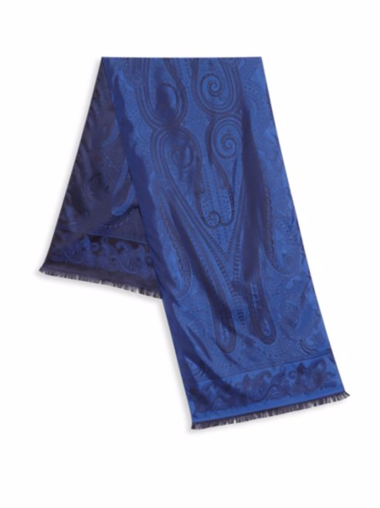
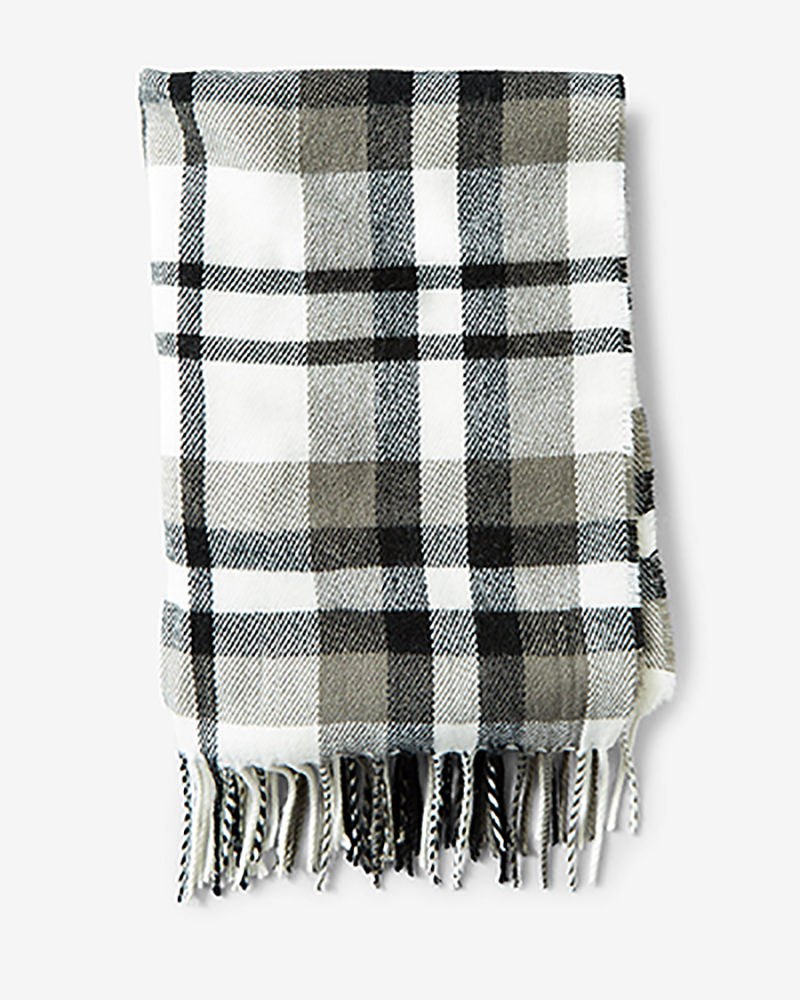
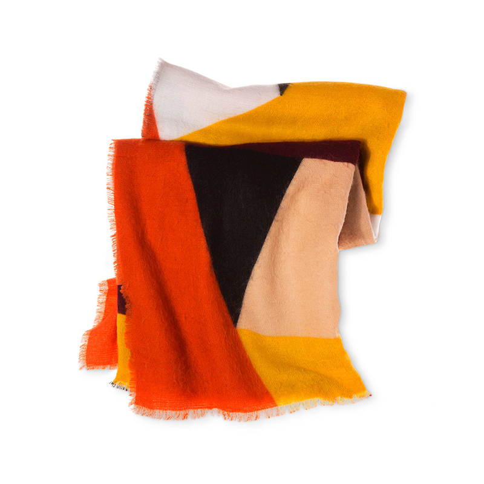
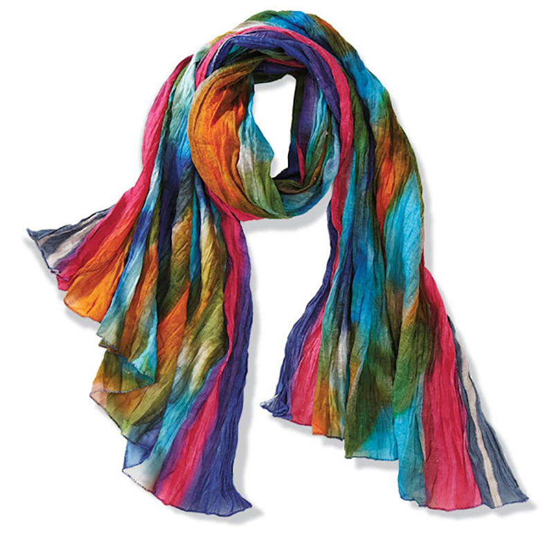
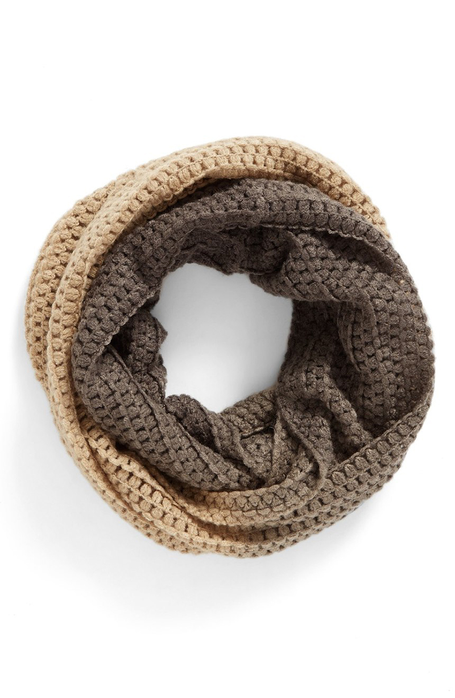
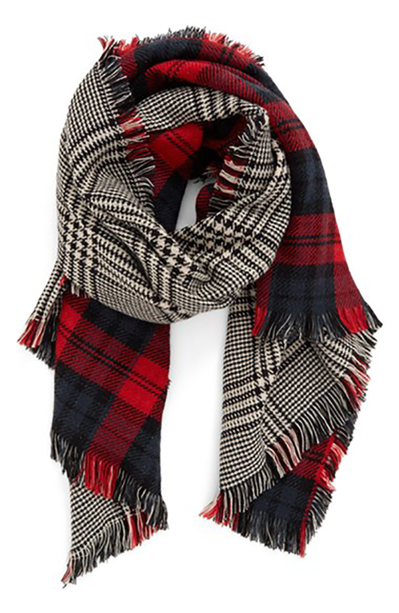
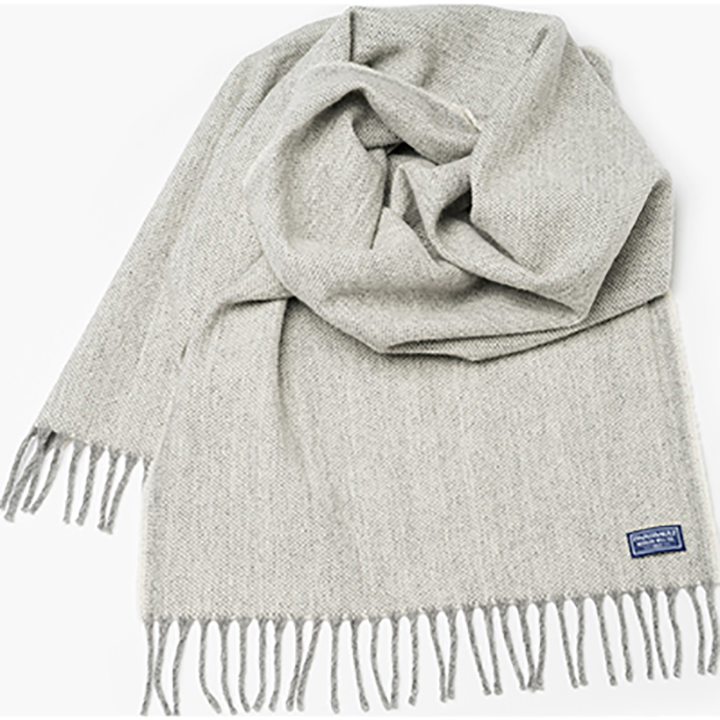
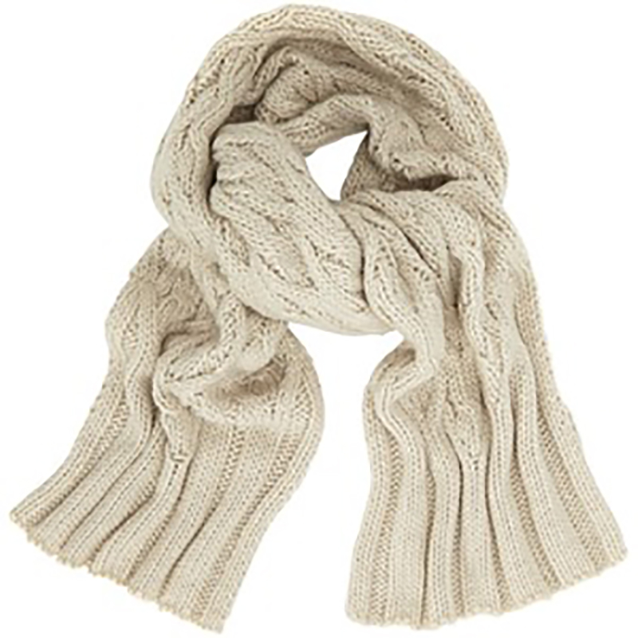

Best blue scarf ever...soft as silk!
Luxurious silk scarf with subtle paisley pattern. 100% silk
Make your fellow Scotsman proud!
Generously sized, extra soft and featuring a dazzling fringe, this scarf is rendered in a versatile gray, black and white plaid. Expertly beat the cold with style. 100% acrylic.
Magnificent orange
This scarf is big, bold, and designed to twist and wrap any way you wish. All the colors of the season are harmonized in this oversize accent, so you can adjust to contrast or match your outfit. Soft and lush, it is your stylish standoff against cold AC and unexpected fall breezes. 100% acrylic
Sublime!
Handmade by women in Agra, sales provide medical and educational support in this remote area of India. Crinkly 100% cotton.
It's neverending!
A dip-dye effect adds color and dimension to a cozy infinity scarf featuring a soft, chunky knit. 100% acrylic.
Two scarves in one!
Two classic patterns in one great look: This supersoft and cozy reversible scarf instantly doubles your street-style cred. 100% acrylic.
Warm as wool!
Two classic patterns in one great look: This supersoft and cozy reversible scarf instantly doubles your street-style cred. 100% acrylic.
Fancy and warm!
Warm yourself with this women's natural cable knit scarf, crafted from 100% Merino wool. Imported.
